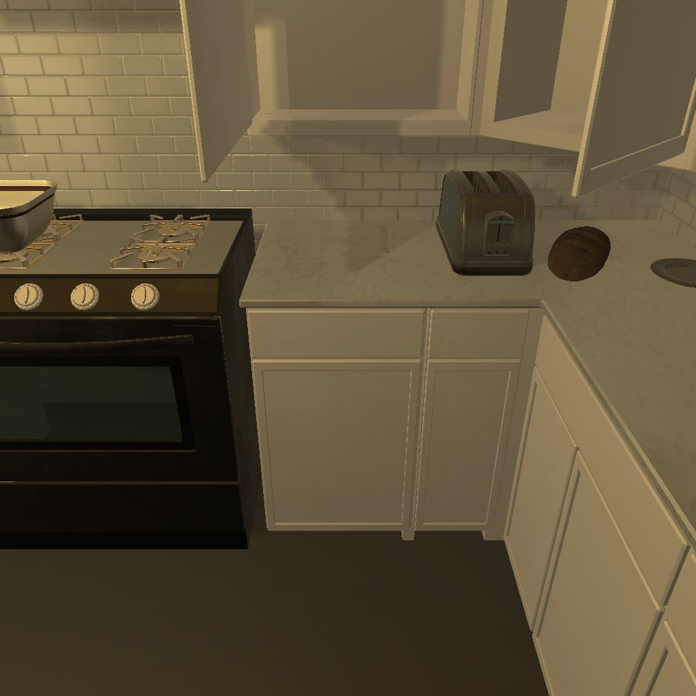

---------------------------------------------------------task: 29---------------------------------------------------------
--------------------------------------------------------------------------------------------------------------------------------------------------------------------
--------------------------------------------------------------------------------------------------------------------------------------------------------------------
Step:--------------------------------------------------------------------------18-------------------------------------------------------------------------------
----------------------------------------
VLM Prompt:
Image1:
Image2:
**Instruction**
1. Analyze the provided images to identify all visible household objects and compare the difference between images (e.h. whether the object is opened or not and taken on hand or not), focusing on those relevant to the task description "find two tomato and put them in countertop."
2. Use the analysis of images and the task hint "The agent must find an object of the desired type, pick it up, find the correct location to place it, put it down there, then look for another object of the desired type, pick it up, return to previous location, and put it down there with the other object." to answer the question: what is the most reasonable action in the choices for the task description "find two tomato and put them in countertop"?
3. Decide and write the answer using the template: The answer is: (i): , where i is the real number. If there is no desired object in images, search every place based on **Initial Observation** to find the object. And if no one is exactly correct, choose a similar answer.
**Initial Observation**
You are in the middle of a room. Looking quickly around you, you can see cabinet (1-20), toaster (1), microwave (1), garbagecan (1), countertop (1-2), drawer (1-4), stoveburner (1-4), sinkbasin (1), sink (1), fridge (1), diningtable (1), coffeemachine (1)
**Answer Choices**
(1): go to cabinet 3
(2): go to toaster 1
(3): go to cabinet 4
(4): go to cabinet 5
(5): go to microwave 1
(6): go to garbagecan 1
(7): go to countertop 1
(8): go to drawer 1
(9): go to cabinet 6
(10): go to cabinet 7
(11): go to drawer 2
(12): go to stoveburner 1
(13): go to stoveburner 2
(14): go to countertop 2
(15): go to cabinet 8
(16): go to cabinet 9
(17): go to cabinet 10
(18): go to drawer 3
(19): go to drawer 4
(20): go to stoveburner 3
(21): go to stoveburner 4
(22): go to cabinet 11
(23): go to cabinet 12
(24): go to cabinet 13
(25): go to cabinet 14
(26): go to sinkbasin 1
(27): go to sink 1
(28): go to cabinet 15
(29): go to fridge 1
(30): go to cabinet 16
(31): go to cabinet 17
(32): go to cabinet 18
(33): go to cabinet 19
(34): go to diningtable 1
(35): go to coffeemachine 1
(36): go to cabinet 20
(37): open cabinet 2
(38): close cabinet 2
(39): take pot 1 from cabinet 2
(40): take bread 1 from cabinet 2
(41): take plate 1 from cabinet 2
(42): take stoveknob 1 from cabinet 2
(43): take stoveknob 2 from cabinet 2
(44): take stoveknob 3 from cabinet 2
(45): take butterknife 2 from cabinet 2
(46): examine cabinet 2
**Answer**
Let's think step by step by following the instructions.
----------------------------------------
----------------------------------------
Original Response:
First, we analyze the provided images. In both Image1 and Image2, we can see a stove with a pot on it, a toaster with two slots, a coconut on the countertop, and a cabinet with its door opened. There are no visible tomatoes in either image.
Now, considering the task description "find two tomatoes and put them in countertop" and the task hint, the most reasonable action would be to search for the tomatoes. Since tomatoes are typically stored in a fridge or a cabinet, we should aim for these locations.
From the initial observation, we know there is a fridge and multiple cabinets in the room. Among the answer choices, going to the fridge (29) or one of the cabinets (1-20) would be the most logical step.
The answer is: (29): go to fridge 1, where 29 is the real number. If there are no tomatoes in the fridge, we should continue searching the cabinets based on the initial observation to find the object.
----------------------------------------
----------------------------------------
>>> Refine Original VLM Response and Get Pure Action: go to fridge 1, where 29 is the real number
----------------------------------------
-----------------------------------------------------------------
Running time: 15.340201139450073 seconds
Total Money: 15.453650000000005
-----------------------------------------------------------------
-----------------------------------------------------------------
Text Observation:Nothing happens.
-----------------------------------------------------------------
UNSUCCEED